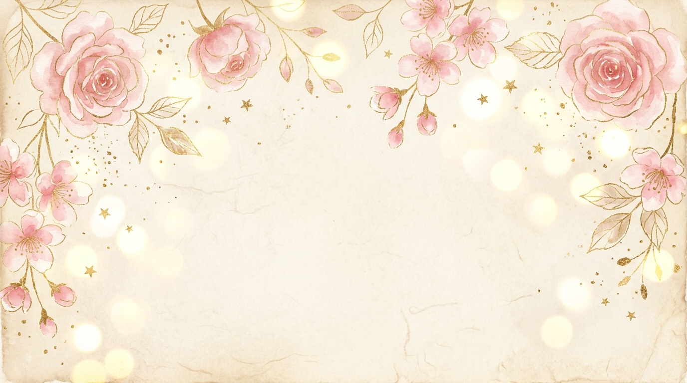

С 16-летием, моя любимая Настенька!
Родная моя Настя, поздравляю тебя с твоим чудесным праздником — с твоим 16-летием! Ты — самое нежное, светлое и прекрасное чудо в моей жизни. Твоя улыбка способна согреть меня даже в самый пасмурный день, а в твоих глазах я вижу целый мир, в котором мне хочется остаться навсегда.
Пусть твои шестнадцать лет станут началом самого сказочного и счастливого времени! Я желаю тебе бесконечного вдохновения, радости, сияющих глаз и исполнения каждой твоей самой заветной мечты. Пусть каждое твоё утро начинается с улыбки, а я сделаю всё, чтобы всегда окружать тебя заботой, теплом и самой искренней любовью.
«Настенька, ты — моя самая красивая мелодия, моё главное счастье и лучшая девушка на свете. Спасибо за каждую секунду рядом с тобой. С Днём Рождения, любимая!»
Нажми на карточки, чтобы открыть маленькие признания от меня
В твой особенный день • 16 лет ✨
С бесконечной любовью,
Твой любимый Артём ♥